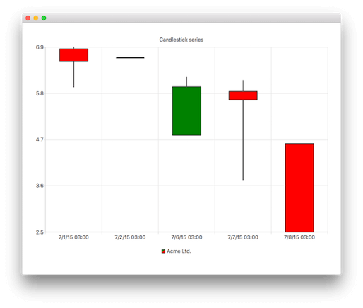

CandlestickSeries QML Type
Represents a series of data as candlesticks. More...
| Import Statement: | import QtCharts 2.7 |
| Since: | QtCharts 2.2 |
| Instantiates: | QCandlestickSeries |
| Inherits: |
Properties
- axisX : AbstractAxis
- axisXTop : AbstractAxis
- axisY : AbstractAxis
- axisYRight : AbstractAxis
- bodyOutlineVisible : bool
- bodyWidth : real
- brushFilename : string
- capsVisible : bool
- capsWidth : real
- count : int
- decreasingColor : color
- increasingColor : color
- maximumColumnWidth : real
- minimumColumnWidth : real
Signals
- candlestickSetsAdded(list<CandlestickSet> sets)
- candlestickSetsRemoved(list<CandlestickSet> sets)
- clicked(CandlestickSet set)
- doubleClicked(CandlestickSet set)
- hovered(bool status, CandlestickSet set)
- pressed(CandlestickSet set)
- released(CandlestickSet set)
Methods
- append(CandlestickSet set)
- at(int index)
- clear()
- insert(int index, CandlestickSet set)
- remove(CandlestickSet set)
Detailed Description
The CandlestickSeries type acts as a container for single candlestick items. Each item is drawn to its own category when using BarCategoryAxis. DateTimeAxis and ValueAxis can be used as an alternative to BarCategoryAxis. In this case, each candlestick item is drawn according to its timestamp value.
Note: The timestamps must be unique within a CandlestickSeries. When using BarCategoryAxis, only the first one of the candlestick items sharing a timestamp is drawn. If the chart includes multiple instances of CandlestickSeries, items from different series sharing a timestamp are drawn to the same category. When using ValueAxis or DateTimeAxis, candlestick items sharing a timestamp will overlap each other.
The following QML shows how to create a simple candlestick chart:
import QtQuick 2.5 import QtCharts 2.2 ChartView { title: "Candlestick Series" width: 400 height: 300 CandlestickSeries { name: "Acme Ltd." increasingColor: "green" decreasingColor: "red" CandlestickSet { timestamp: 1435708800000; open: 690; high: 694; low: 599; close: 660 } CandlestickSet { timestamp: 1435795200000; open: 669; high: 669; low: 669; close: 669 } CandlestickSet { timestamp: 1436140800000; open: 485; high: 623; low: 485; close: 600 } CandlestickSet { timestamp: 1436227200000; open: 589; high: 615; low: 377; close: 569 } CandlestickSet { timestamp: 1436313600000; open: 464; high: 464; low: 254; close: 254 } } }

See also CandlestickSet, BarCategoryAxis, DateTimeAxis, and ValueAxis.
Property Documentation
axisX : AbstractAxis |
axisXTop : AbstractAxis |
axisY : AbstractAxis |
The y-axis used for the series. If you leave both axisY and axisYRight undefined, a value axis is created for the series.
See also axisYRight and ValueAxis.
axisYRight : AbstractAxis |
bodyOutlineVisible : bool |
The visibility of the candlestick body outlines.
bodyWidth : real |
The relative width of the candlestick item within its own slot, in the range from 0.0 to 1.0. Values outside this range are clamped to 0.0 or 1.0.
brushFilename : string |
The name of the file used as a brush image for the series.
capsVisible : bool |
The visibility of the caps.
capsWidth : real |
The relative width of the caps within a candlestick, in the range from 0.0 to 1.0. Values outside this range are clamped to 0.0 or 1.0.
count : int |
The number of candlestick items in a series.
decreasingColor : color |
The color of the decreasing candlestick item body. A candlestick is decreasing when its open value is higher than the close value. By default, this property is set to the brush color with the alpha channel set to 128. The default color is used also when the property is set to an invalid color value.
increasingColor : color |
The color of the increasing candlestick item body. A candlestick is increasing when its close value is higher than the open value. By default, this property is set to the brush color. The default color is used also when the property is set to an invalid color value.
maximumColumnWidth : real |
The maximum width of the candlestick items in pixels. Setting a negative value means there is no maximum width. All negative values are converted to -1.0.
minimumColumnWidth : real |
The minimum width of the candlestick items in pixels. Setting a negative value means there is no minimum width. All negative values are converted to -1.0.
Signal Documentation
candlestickSetsAdded(list<CandlestickSet> sets) |
This signal is emitted when the candlestick items specified by sets are added to the series.
The corresponding signal handler is onCandlestickSetsAdded.
Note: The corresponding handler is onCandlestickSetsAdded.
candlestickSetsRemoved(list<CandlestickSet> sets) |
This signal is emitted when the candlestick items specified by sets are removed from the series.
The corresponding signal handler is onCandlestickSetsRemoved.
Note: The corresponding handler is onCandlestickSetsRemoved.
clicked(CandlestickSet set) |
This signal is emitted when the candlestick item specified by set is clicked on the chart.
The corresponding signal handler is onClicked.
Note: The corresponding handler is onClicked.
doubleClicked(CandlestickSet set) |
This signal is emitted when the candlestick item specified by set is double-clicked on the chart.
The corresponding signal handler is onDoubleClicked.
Note: The corresponding handler is onDoubleClicked.
hovered(bool status, CandlestickSet set) |
This signal is emitted when a mouse is hovered over the candlestick item specified by set in a chart.
When the mouse moves over the item, status turns true, and when the mouse moves away again, it turns false.
The corresponding signal handler is onHovered.
Note: The corresponding handler is onHovered.
pressed(CandlestickSet set) |
This signal is emitted when the user clicks the candlestick item specified by set and holds down the mouse button.
The corresponding signal handler is onPressed.
Note: The corresponding handler is onPressed.
released(CandlestickSet set) |
This signal is emitted when the user releases the mouse press on the candlestick item specified by set.
The corresponding signal handler is onReleased.
Note: The corresponding handler is onReleased.
Method Documentation
append(CandlestickSet set) |
Adds a single candlestick item specified by set to the series and takes ownership of it. If the item is null or it is already in the series, it is not appended.
Returns true if appending succeeded, false otherwise.
at(int index) |
Returns the candlestick item at the position specified by index. Returns null if the index is not valid.
clear() |
Removes all candlestick items from the series and permanently deletes them.
insert(int index, CandlestickSet set) |
Inserts the candlestick item specified by set to the series at the position specified by index. Takes ownership of the item. If the item is null or already belongs to the series, it is not inserted.
Returns true if inserting succeeded, false otherwise.
remove(CandlestickSet set) |
Removes a single candlestick item, specified by set, from the series.
Returns true if the item is successfully deleted, false otherwise.